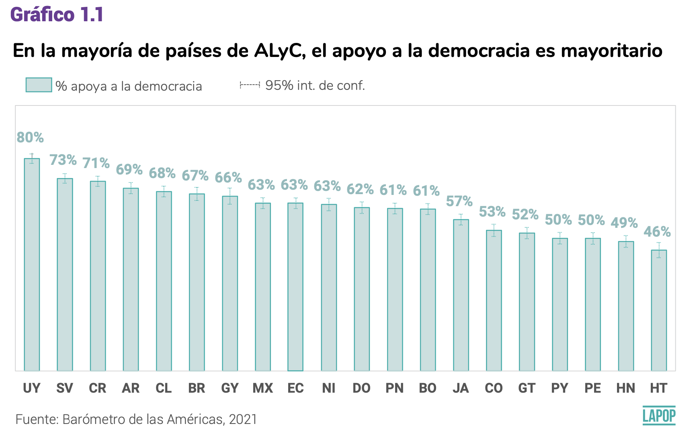

Introducción
En este documento veremos aspectos básicos del manejo de datos, como
la recodificación de una variable, la selección de datos y el cálculo de
una nueva variable. Al final incluímos una nota acerca de los cálculos
estadísticos considerando el efecto de diseño.
Sobre la base de datos
Los datos que vamos a usar deben citarse de la siguiente manera:
Fuente: Barómetro de las Américas por el Proyecto de Opinión Pública de
América Latina (LAPOP), wwww.LapopSurveys.org.
En este documento cargamos una base que se encuentra alojada en el
repositorio “materials_edu” de la cuenta de LAPOP en GitHub. Mediante la
librería rio y el comando import se puede
importar esta base de datos desde este repositorio, usando el siguiente
código. Importamos la base de datos en un objeto “lapop21”. Esta base de
datos tiene extensión .RData y cuando se importa, carga las variables
como del tipo double (“dbl”), que es un tipo de variable numérica que
acepta decimales, a diferencia del tipo integer, “int”, que solo acepta
enteros.
library(rio)
lapop21 = import("https://raw.github.com/lapop-central/materials_edu/main/lapop21.RData")
En este repositorio también se encuentra la base de datos de la ronda
anterior, la que también podemos cargar y llamarla “lapop18”. Es
necesario aclarar que esta base de datos, importada desde un archivo
SPSS, carga las variables como del tipo numéricas (“num”) que para fines
prácticos es igual al formato doble (“dbl”).
lapop18 = import("https://raw.github.com/lapop-central/materials_edu/main/LAPOP_AB_Merge_2018_v1.0.sav")
Recodificación de una variable
En esta sección usaremos el reporte “El Pulso de la Democracia”, con
los resultados de la última ronda 2021 del Barómetro de las Américas,
disponible aquí.
Este reporte presenta los resultados acerca del apoyo a la democracia en
las Américas. Estos resultados se basan en la variable ING4 de la base
de datos. Esta variable está fraseada de la siguiente manera:
ING4. Cambiando de nuevo de tema, puede que la
democracia tenga problemas, pero es mejor que cualquier otra forma de
gobierno. ¿Hasta qué punto está de acuerdo o en desacuerdo con esta
frase?
Esta variable está medida en una escala del 1 a 7, donde 1 significa
“muy en desacuerdo” y 7 significa “muy de acuerdo”. Luego, los valores
entre 5 a 7 son recodificados como apoyo a la democracia. Para ver la
distribución de respuestas a esta variable, podemos usar el comando
table.
table(lapop21$ing4)
##
## 1 2 3 4 5 6 7
## 5704 2567 4980 8177 13886 8390 16759
De esta manera calculamos las observaciones (frecuencias absolutas)
por cada valor de la variable. Para calcular el porcentaje de personas
que apoya a la democracia tenemos que recodificar esta variable y crear
una nueva. Es decir, la variable original ING4, en una escala de 1-7, la
recodificamos en una nueva variable, siguiendo la siguiente regla:
- Valores entre 1-4 de ING4 se transforman en 0 en una nueva variable
ing4r
- Valores entre 5-7 de ING4 se transformen en 1 en una nueva variable
ing4r
Un ejemplo de cómo se presentan estos datos recodificados en el
reporte se puede ver en el Gráfico 1.1. Este muestra el porcentaje de
ciudadanos que apoya a la democracia por país. Es decir, se muestra el
porcentaje de entrevistados que respondieron entre 5 y 7 a la pregunta
ING4 en cada país. De acuerdo a la recodificación planteada, este
gráfico representaría el porcentaje de entrevistados que registra un 1
en la variable recodificada.

En el informe El Pulso de la Democracia de la ronda 2018/19,
disponible aquí,
también se presenta un gráfico similar, usando la misma variable y la
misma regla de recodificacíon.

Para recodificar una variable en R hay varias formas. Una de las
formas más eficientes de hacerlo es usando el comando
recode del paquete car. El paquete
dplyr tiene un comando recode que puede
confundir a R. Para evitar confusiones usaremos la sintaxis
car::recode para la recodificación, es decir para
especificar que se use el comando recodedel paquete
car y no de otro. Guardamos la variable recodificada como
“lapop21$ing4rec (es decir, creamos una nueva variable o vector en el
dataframe). Luego, usamos el comando table para describir
esta nueva variable.
library(car)
lapop21$ing4rec = car::recode(lapop21$ing4, "1:4=0; 5:7=1")
table(lapop21$ing4rec)
##
## 0 1
## 21428 39035
Si sumamos las observaciones entre 1 y 4 de la variable original
(5704+2567+4980+8177), vemos que es el resultado que tenemos en el valor
0 de la nueva variable (21428), tal como planteamos en la
recodificación. También debemos notar que la base de datos en el
Environment ahora tiene una variable más, totalizando 1826
variables.
Selección de casos
El gráfico 1.1 muestra que el apoyo a la democracia va de un máximo
de 80% en Uruguay a un mínimo de 46% en Haití. Para replicar el
resultado correspondiente a Uruguay podemos seleccionar las
observaciones de ese país. De acuerdo a la codificación de la variable
“pais”, Uruguay tiene el código 14.

La selección de casos en R se puede hacer de múltiples maneras. Una
forma es usar los corchetes […]. Otra forma es usando el
comando subset. Con este comando seleccionamos las
observaciones de este país y guardamos esta selección en un nuevo
dataframe “lapop2” usando este último comando. Se tiene 3009
observaciones en Uruguay.
lapop1 = subset(lapop21, pais==14)
table(lapop1$pais)
##
## 14
## 3009
Con esta selección de datos, podemos calcular el porcentaje
(frecuencias relativas) usando el comando prop.table. Este
comando nos brinda las frecuencias relativas (en valores entre 0 y 1) de
una tabla de frecuencias calculada con table. Estas
frecuencias relativas se multiplican por 100 para reproducir el
porcentaje en cada país. En este caso se usan los […] para
hacer la selección de casos de cada país.
prop.table(table(lapop1$ing4rec[lapop1$pais==14]))*100
##
## 0 1
## 15.47499 84.52501
Estos resultados son porcentajes (entre 0 y 100), pero incluyen
muchos decimales. Para redondear a un decimal, como se muestra en el
Gráfico 1.2, podemos usar el comando round, donde anidamos
toda la sintaxis anterior. En este comando, además, tenemos que
especificar el número de decimales que se quiere, que en este caso es
1.
round(prop.table(table(lapop1$ing4rec[lapop1$pais==14]))*100, 1)
##
## 0 1
## 15.5 84.5
Según este resultado 84.5% de uruguayos apoya a la democracia. Este
resultado es distinto al que se reporta en el gráfico 1.1, donde el
valor reportado es 80%. Esta diferencia es debido a que estos primeros
procedimientos no incluyen el efecto de diseño. Más abajo veremos el
procedimiento para reproducir el resultado exacto reportado.
En el reporte de la ronda 2018/19 el reporte indica que “El Gráfico
1.2 muestra el porcentaje de personas en cada país que expresa apoyar la
democracia en 2018/19. El apoyo a la democracia va de un mínimo de 45%
en Honduras a un máximo de 76.2% en Uruguay” (p.11).
Para replicar estos resultados acerca de Honduras y de Uruguay para
2018/19, podemos seleccionar los datos de estos dos países. De acuerdo
al cuestionario, que se puede ver aquí,
Honduras es el país 4 y Uruguay es el país 14 de la variable “pais”, que
también se ha importando como una variable numérica.
Se incluye el operador “o”, que en R se denota con “|”. De esta
manera se indica que se selecciones las observaciones de Honduras o de
Uruguay (pais==4 | pais==14). La descripción de la variable
“pais” muestra que solo incluye los casos de Honduras (2) y Uruguay
(14).
# lapop2 <- lapop18[lapop18$pais == 4 | lapop18$pais==14, ]
lapop2 = subset(lapop18, pais==4 | pais==14)
table(lapop2$pais)
##
## 4 14
## 1560 1581
El nuevo dataframe “lapop2” tiene 3141 observaciones y 84 variables
debido a que no hemos creado la variable recodificada.
lapop2$ing4rec = car::recode(lapop2$ing4, "1:4=0; 5:7=1")
Con esta variable podemos seguir los mismos procedimientos
anteriormente descritos para producir la tabla de frecuencias
relativas.
prop.table(table(lapop2$ing4rec[lapop2$pais==4]))*100
##
## 0 1
## 54.98995 45.01005
prop.table(table(lapop2$ing4rec[lapop2$pais==14]))*100
##
## 0 1
## 23.80641 76.19359
Y luego incluir el redondeo.
round(prop.table(table(lapop2$ing4rec[lapop2$pais==4]))*100, 1)
##
## 0 1
## 55 45
round(prop.table(table(lapop2$ing4rec[lapop2$pais==14]))*100, 1)
##
## 0 1
## 23.8 76.2
Con este código hemos reproducido los resultados de los países en los
extremos del Gráfico 1.2 del reporte. En este caso, los resultados sí
son similares a los reportados en el gráfico.
Ambos reportes también indican que se excluye de los cálculos a
Estados Unidos y Canadá. La base de datos cargada como “lapop18” incluye
a todos los países de la ronda. Para excluir a estos dos países, tenemos
que seleccionar los países que NO son EE.UU. y Canadá. Esta nueva
selección la guardamos en un nuevo dataframe o se puede sobreescribir en
el dataframe original, como se hace en este caso debido a que la
exclusión de estos países es para todos los cálculos que siguen. De
acuerdo al cuestionario, EE.UU. tiene el código 40 y Canadá, el código
41 en la variable “pais”. Para excluirlos tenemos que incluir a los
países que tengan un código menor a 40 (o de 35 o menos). Para esto
nuevamente podemos usar el comando subset.
lapop18 = subset(lapop18, pais<=35)
Podemos observar en el Environment que se reducen las observaciones
del dataframe “lapop18” luego de correr este código, pues hemos
eliminado las observaciones de entrevistados en estos dos países. El
número de observaciones pasa de 31,050 a 28,042, número que coincide con
el de la base de datos en formato .RData que no incluía a estos
países.
De la misma manera podemos proceder en la base de datos de la ronda
2021, con lo que disminuyen las observaciones a 60661.
lapop21 = subset(lapop21, pais<=35)
Calcular una variable
Una práctica frecuente de LAPOP con los datos del Barómetro de las
Américas es el re-escalamiento de variables. El capítulo sobre
legitimidad democrática del reporte brinda ejemplos de este
re-escalamiento con variables relacionadas al apoyo al sistema. Para
calcular este índice de apoyo al sistema se trabaja con un conjunto de
cinco variables:
B1. ¿Hasta qué punto cree usted que los tribunales de justicia de
(país) garantizan un juicio justo?
B2. ¿Hasta qué punto tiene usted respeto por las instituciones
políticas de (país)?
B3. ¿Hasta qué punto cree usted que los derechos básicos del
ciudadano están bien protegidos por el sistema político de
(país)?
B4. ¿Hasta qué punto se siente orgulloso de vivir bajo el sistema
político de (país)?
B6. ¿Hasta qué punto piensa usted que se debe apoyar al sistema
político de (país)?
Como indica el reporte “Para cada pregunta, la escala original de 1
(”Nada”) a 7 (“Mucho”) se recodifica en una escala de 0 a 100, de tal
forma que 0 indica el menor nivel de apoyo al sistema político y 100 es
el nivel máximo de apoyo al sistema político. Esta nueva escala sigue la
recodificación típica de LAPOP y puede ser interpretada como una
medición del apoyo en unidades, o grados, en una escala continua que va
de 0 a 100” (p.34). Para comprobar la escala original de estas
variables, se puede describir estas variables usando el comando
table.
table(lapop18$b1)
##
## 1 2 3 4 5 6 7
## 4089 4067 5881 6137 4215 1631 1371
table(lapop18$b2)
##
## 1 2 3 4 5 6 7
## 2861 2152 2998 4153 5182 4448 5679
table(lapop18$b3)
##
## 1 2 3 4 5 6 7
## 5080 4096 5153 5349 4219 2061 1491
table(lapop18$b4)
##
## 1 2 3 4 5 6 7
## 5095 3206 3743 4557 4326 3041 3584
table(lapop18$b6)
##
## 1 2 3 4 5 6 7
## 3713 2325 2971 4277 4616 3868 5572
Observamos que efectivamente todas las variables están en una escala
de 1 a 7. Para reescalar una variable en una escala original de 1 a 7 a
otra de 0 a 100, lo primero que tenemos que hacer es restar 1 unidad,
con lo que la variable tendría una escala de 0 a 6, luego dividirla
entre 6, con lo que variaría entre 0 y 1 y, finalmente, multiplicarla
por 100. Esto es:
Variable reescalada = ((variable original -1)/6)*100
lapop18$b1rec = ((lapop18$b1-1)/6)*100
lapop18$b2rec = ((lapop18$b2-1)/6)*100
lapop18$b3rec = ((lapop18$b3-1)/6)*100
lapop18$b4rec = ((lapop18$b4-1)/6)*100
lapop18$b6rec = ((lapop18$b6-1)/6)*100
table(lapop18$b1rec)
##
## 0 16.6666666666667 33.3333333333333 50
## 4089 4067 5881 6137
## 66.6666666666667 83.3333333333333 100
## 4215 1631 1371
Con esta transformación observamos que los 4,089 entrevistados que
marcaron 1 en la pregunta B1, ahora tienen un puntaje de 0. Los 4,067
que marcaron 2, ahora tienen un puntaje de 16.67, es decir
2-1=1/6=0.1667*100=16.67. Esta misma operación se pudo hacer con el
comando car::recode, siguiendo la siguiente regla de
recodificación:
- Valor de 1 en variable original se recodifica como 0 en nueva
variable
- Valor de 2 en variable original se recodifica como 16.67 en nueva
variable
- Valor de 3 en variable original se recodifica como 33.33 en nueva
variable
- Valor de 4 en variable original se recodifica como 50 en nueva
variable
- Valor de 5 en variable original se recodifica como 66.67 en nueva
variable
- Valor de 6 en variable original se recodifica como 83.33 en nueva
variable
- Valor de 7 en variable original se recodifica como 100 en nueva
variable
Esta manera de recodificar, sin embargo, es poco eficiente. Es más
simple usar la fórmula para calcular la recodificación.
Para calcular el índice de apoyo al sistema, el reporte indica que
“El índice de apoyo al sistema es el promedio de cinco preguntas: B1,
B2, B3, B4 y B6” (p.46). Es decir, con las variables reescaladas tenemos
que calcular el promedio de estas cinco variables para cada individuo
(es decir, en cada fila de la base de datos). Podríamos calcular esta
operación del promedio de forma manual.
Apoyo al sistema = (b1rec + b2rec + b3rec + b4rec + b6rec)/5
En R tenemos el comando rowMeans que sirva para calcular
promedios de ciertas columnas por cada fila. La sintaxis
[, 86:90] indica que realizaremos el cálculo del promedio
por filas para todas las filas y usando las columnas 86 a 90 del
dataframe “lapop18” (podríamos hacer el cálculo para algunas filas en
particular definiendo [fila_n:fila_m, 86:90]). Este
promedio lo guardamos en una nueva variable “apoyo”, que
describimos.
lapop18$apoyo = rowMeans(lapop18[,85:89])
table(lapop18$apoyo)
##
## 0 3.33333333333333 6.66666666666667 10
## 634 368 439 525
## 13.3333333333333 16.6666666666667 20 23.3333333333333
## 527 550 834 745
## 26.6666666666667 30 33.3333333333333 36.6666666666667
## 810 911 1063 1086
## 40 43.3333333333333 46.6666666666667 50
## 1287 1317 1254 1487
## 53.3333333333333 56.6666666666667 60 63.3333333333333
## 1397 1408 1449 1243
## 66.6666666666667 70 73.3333333333333 76.6666666666667
## 1227 1113 988 827
## 80 83.3333333333333 86.6666666666667 90
## 820 572 445 369
## 93.3333333333333 96.6666666666667 100
## 245 131 210
Con este índice podemos calcular el apoyo al sistema promedio para la
última ronda del Barómetro de las Américas, así como los promedios de
cada una de las variables que componen el índice. Usamos el comando
mean para el promedio y la especificación
na.rm=T para indicarle al comando que no tome en cuenta los
valores perdidos de estas variables. Veremos estos estadísticos en más
detalle en otras secciones.
mean(lapop18$apoyo, na.rm=T)
## [1] 48.79419
mean(lapop18$b1rec, na.rm=T) #Cortes garantizan juicio justo
## [1] 41.06032
mean(lapop18$b2rec, na.rm=T) #Respeto a las instituciones
## [1] 59.23937
mean(lapop18$b3rec, na.rm=T) #Derechos básicos están protegidos
## [1] 40.42406
mean(lapop18$b4rec, na.rm=T) #Orgullos por el sistema político
## [1] 47.41096
mean(lapop18$b6rec, na.rm=T) #Se debería apoyar al sistema político
## [1] 56.28337
Estos resultados son los que se muestran en el Gráfico 2.1 para la
ronda 2018/19.

Calcular una variable de manera condicional
En algunas ocasiones el cálculo de una variable no requiere solamente
la transformación numérica de la variable original, sino que los valores
de la nueva variable dependen de valores de otras variables. Por
ejemplo, el capítulo “Redes sociales y actitudes políticas” del reporte
“El Pulso de la Democracia” de la ronda 2018/19 presenta los resultados
para las variables “usuario de Whatsapp”, “usuario de Twitter” y
“usuario de Facebook”. Para calcular estas variables, el pie de página 7
de este capítulo indica: “Para cada plataforma, se identifican los
usuarios con una combinación de dos conjuntos de preguntas. Primero, se
identifican como usuarios a quienes responden positivamente a las
preguntas, SMEDIA1/SMEDIA4/SMEDIA7. ¿Tiene usted cuenta de
Facebook/Twitter/Whatsapp? Luego, se recodifica como no usuario a
quienes responden”nunca” a las preguntas siguientes,
SMEDIA2/SMEDIA5/SMEDIA8. ¿Con qué frecuencia ve contenido en
Facebook/Twitter/Whatsapp?” (p. 64).

Es decir, el usuario no solo es el que tiene una cuenta (SMEDIA1=1),
sino el que la usa con cierta frecuencia (SMEDIA2=1, 2, 3, 4). De esta
manera, el no usuario puede tener una cuenta, pero nunca usarla. Por lo
tanto, la variable “usuario” depende de los valores de 2 variables. La
regla de codificación que se sigue es:
Usuario de Facebook = 1 (sí es usuario) si SMEDIA1 = 1 (tiene
cuenta) y SMEDIA2 <= 4 (la usa con alguna frecuencia)
Usuario de Facebook = 0 (no es usuario) si SMEDIA2 = 2 (no tiene
cuenta) o SMEDIA2 = 5 (tiene cuenta pero nunca la usa)
Producimos esta regla de codificación con la siguiente sintaxis de R,
que usa el comando ìfelse. Esta sintaxis incluye la
condición para asignar valores de 1 a una nueva variable y asigna a
todas las demás observaciones el valor de 0. Describimos estas nuevas
variables usando los comandos table para generar las
frecuencias absolutas, prop.table para las frecuencias
relativas y round para redondear los decimales. Estos
comandos los veremos en más detalle en las siguientes secciones.
lapop18$fb_user = ifelse(lapop18$smedia1==1 & lapop18$smedia2<=4, 1, 0)
lapop18$tw_user = ifelse(lapop18$smedia4==1 & lapop18$smedia5<=4, 1, 0)
lapop18$wa_user = ifelse(lapop18$smedia7==1 & lapop18$smedia8<=4, 1, 0)
round(prop.table(table(lapop18$fb_user))*100, 1)
##
## 0 1
## 43.8 56.2
round(prop.table(table(lapop18$tw_user))*100, 1)
##
## 0 1
## 92.1 7.9
round(prop.table(table(lapop18$wa_user))*100, 1)
##
## 0 1
## 35.8 64.2
Estos resultados son los que se presentan en el Gráfico 3.1 del
reporte en forma de gráficos circulares. Veremos este tipo de gráficos
en la siguiente sección.

Observación del efecto de diseño
Tanto los resultados para apoyo al sistema, como los de usuarios de
redes sociales difieren de los que aparecen en el reporte por dos
motivos. En primer lugar, para apoyo al sistema, debido a que “Los
valores a lo largo del tiempo se calculan incluyendo únicamente los
países que el Barómetro de las Américas ha estudiado regularmente desde
2006: Argentina, Brasil, Bolivia, Chile, Colombia, Costa Rica, República
Dominicana, Ecuador, El Salvador, Guatemala, Honduras, Jamaica, México,
Nicaragua, Panamá, Paraguay, Perú, Uruguay” (p.46). El código solo
filtra la última ronda, que incluye países que no están en esa lista,
como Estados Unidos o Canadá. De otro lado, los cálculos reportados en
la publicación incluyen el uso de factores de ponderación, que no hemos
incluido en estos cálculos, pero que en otros documentos incorporaremos
(ver aquí).
Resumen
En este documento hemos visto los elementos básicos de la
manipulación y transformación de datos usando el Barómetro de las
Américas. Hemos recodificado una variable usando el comando
recode, hemos seleccionado casos usando subset
y hemos calculado una nueva variable algebraicamente y con el comando
ifelse.
